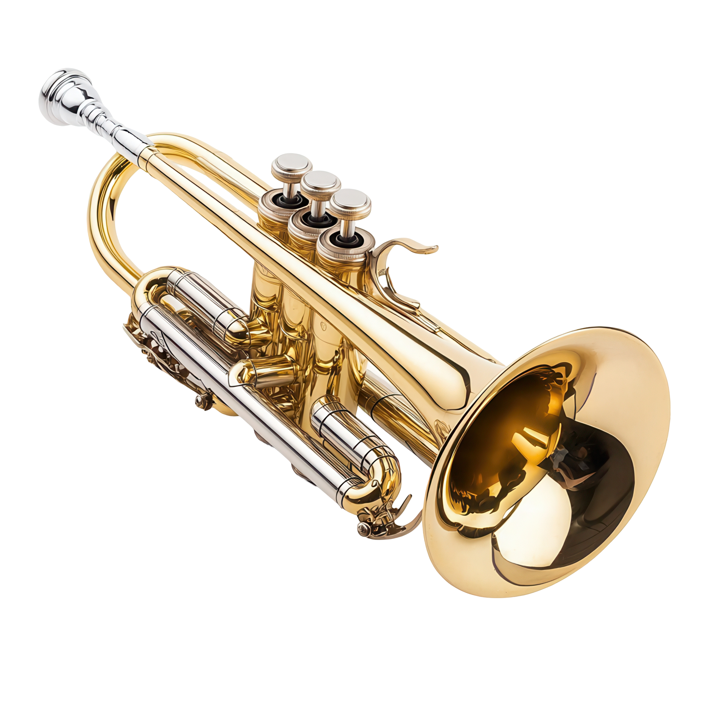

World of Instruments - Promotional Page
Live App: Click here to try the app
📱 What is this?
World of Instruments is an educational Progressive Web App (PWA) that introduces users to different musical instruments. Each instrument has an image, a brief description, and a sound clip. It works online and offline, and can be installed on your device just like a native app.
🚀 Features
- Interactive canvas displaying the selected instrument
- Buttons to explore multiple instruments
- Plays an audio sample of each instrument
- Offline-ready thanks to a service worker
- Installable on phones and desktops
🖼 Screenshots



📥 How to Install
- Open the app in Chrome, Edge, or Safari.
- Click the install icon (a plus sign in the address bar) or tap "Add to Home Screen" on mobile.
- The app will be saved to your device and can be opened without the browser.
👨💻 Programmer Documentation
How to Add a New Instrument
- Open
data/instruments.json
- Add a new entry like below:
{
"title": "Violin",
"description": "A bowed string instrument used in orchestras and solo performances.",
"image": "images/violin.jpg",
"audio": "audio/violin.mp3"
}
- Save your violin image to the
images/ folder.
- Save the violin audio sample to the
audio/ folder.
That’s it! The app will automatically show the new instrument next time it loads.